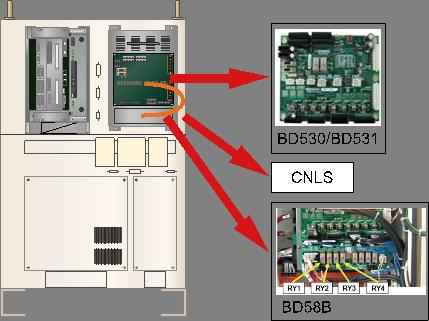
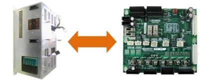

Warning
Make sure the CNZB1 and CNBZ2 connectors of BD58B are removed while examining the Robot's belt and break detection sensors in order to prevent the fall of list axis.
1.1.9.1. Outline
A sensor that is installed on an axis (one of Robot's operating axis) which transfers the power to the belt is determining whether the belt exists or not. This error will occur, if a belt does not exist in the detection range of the sensor as the belt is broken.
This error also can be caused by an abnormal connection between the sensor and the board that is installed on a controller.
1.1.9.2. Causes and examine methods
|
(1) Please check the status of the error. n Please check the Private input signal monitoring window. n Please check the status of BD58B board's relay operation.
<Error status on monitoring window, but replay is normal(ON)> (2) Please examine the components that are related to the error detection. n Please replace CNSGC cable and examine it CNSGC. n Please replace BD530/BD531 board and examine it.
<Error status on monitoring window, and replay is abnormal(OFF)> (3) Please examine the Robot. n Please check the status of belt in the Robot's drive unit. n Please check the operation of the sensor that detects the broken belt. |
(1) Please check the status of the error.
n Check the Private input signal from the monitoring window of TP510
Firstly, check if the Lift axis belt/Limit (Arm) is being input. This window can be accessed from 『[F1]: Service』 → 『1: Monitoring』 → 『2: Input/output signal』 → 『1: Private input signal』. If the Lift axis belt/Limit (Arm) is highlighted in yellow, it indicates an error status.
Figure 1.43 Checking the Lift axis belt from Private input signal
n Checking the status of BD58B board's relay operation
Proximity sensor that attached at the Robot's operation part detects a break based on the light reflection from surface of the belt and transmits the ON/OFF signal to the controller. The received signal will be transferred to BD58B board for the fall prevention brake system and as well as to the BD530 (the System Board). Please check the sensor's operation status based on the relay operation status of BD58B board.
Figure 1.44 Checking the Relay Status of BD58B Board
Relay operation status of BD58B board can be checked as below diagram. Normal status relay operates the coil and can see the empty space at the center.
Figure 1.45 Comparing the Normal and Error Status of BD58B Board's Relay
You may confirm which (in the Robot) axis's detection sensor is operating based on the status of BD58B board's relay operation.
|
① Normal |
② Z1 sensor is off (Z1 axis is broken) |
|
|
|
|
③ Z2 sensor is off (Z2 axis is broken) |
④ Both Z1/Z2 sensor are off (Z1/Z2 axis are broken) |
|
|
|
Figure 1.46 Checking the Location of Error Based on BD58B Board's Relay
(2) Please examine the components that are related to the error detection.
If the Private input signal from the monitoring window and the relay status of BD58B board are different, CNLS cable that connects the BS58B and BD530/BD531, or the BD530/BD531 is faulty. Please refer to the compositions of controller from the manual and examine the each component.

Figure 1.47 Replacing the parts related to the error detection
n Replacement and examining of CNLS cable
Replace the CNLS cable with new one and test it. If the error does not persist, cable connection problem caused this error. Please replace the CNLS cable with new one.
n Replacement and examining of BD530/BD531
Replace the BD530/BD531 with new one and test it. If the error does not persist, the board malfunction caused this error. Please replace the BD530/BD531 with new one.

Figure 1.48 Replacement of BD530/BD531
(3) Please examine the Robot
If the Private input signal from the monitoring window and the status of BD58B board's relay, BD58B actually acknowledged the error operation of the sensor. Robot's belt and detection sensor must to be checked. Please remove the CNZB1 and CNBZ2 connector of BB58B board in order to prevent a fall of lift axis that may caused by sensor malfunction during the examination of Robot.
|
Warning Make sure the CNZB1 and CNBZ2 connectors of BD58B are removed while examining the Robot's belt and break detection sensors in order to prevent the fall of list axis. |
n Check the belt's status of Robot's operation part
Please check the belt of the axis that confirmed by a status of BD58B relay from the Robot. Applicability and location of the belt may be different to each Robot's model. Please check the status of belt according to the Robot's specification and maintenance manual.
Figure 1.49 Lift Axis Belt and the Break Detection Sensor
n Checking the operation of belt break detection sensor
Detection sensor is an optical type and it can only detect when the object is within a certain distance. If the object if out of the distance, it will process an error. Please change the distance to the object at the front of detection sensor and check the status of TP510's Private input signal. If the sensor's operation and the result of monitoring do not match, please check the connection of signal line between the sensor and the TBBO terminal block (inside of BD58B board) in the Robot. Sensor's LED green indicates normal status and red indicates error status.